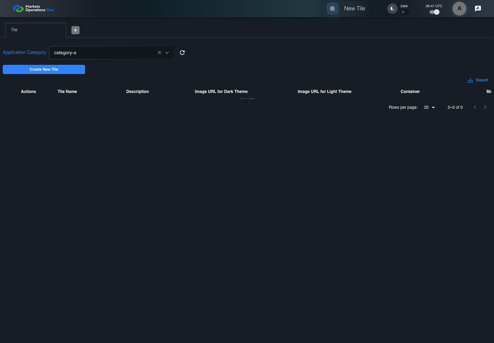
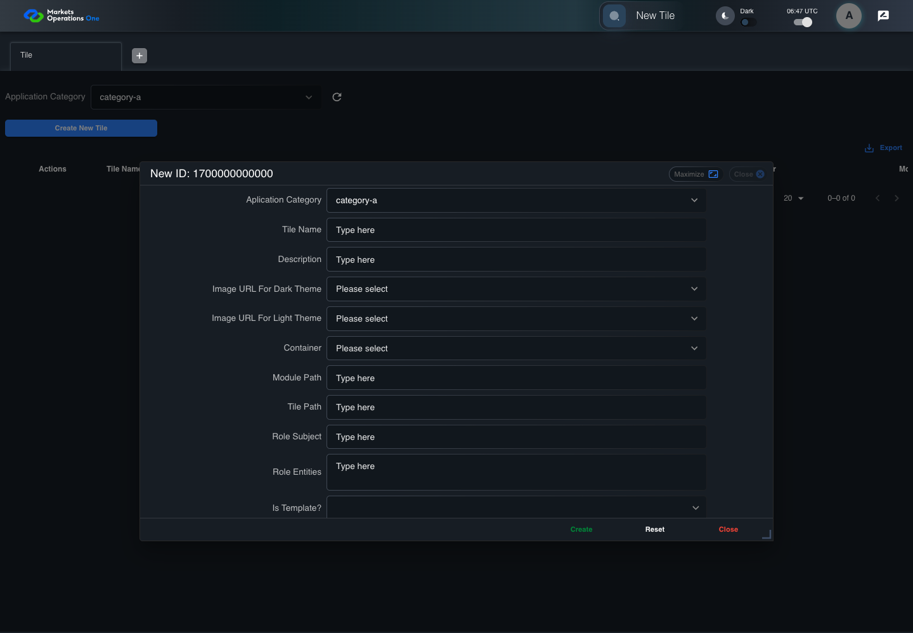
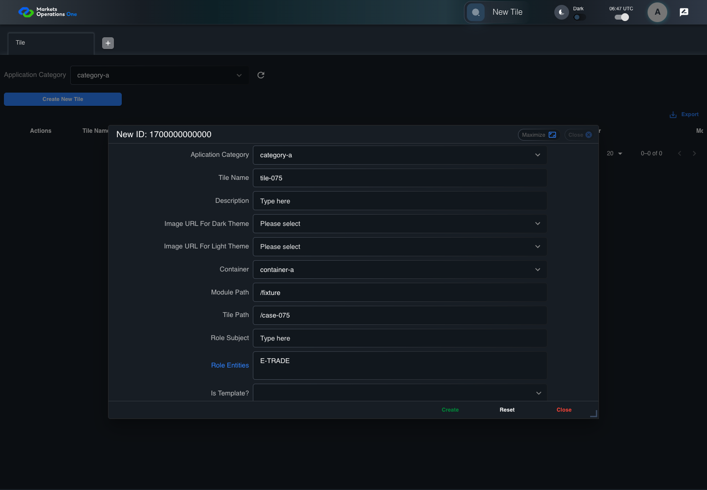

BFF-ADM-075 current BFF administration through actual UI
FAIL · application/run-072/bff-adm-075-current-bff-administration-through-actual-ui-2db96bca0052-attempt-1 · ACTUAL_APPLICATION_LOCAL_SERVICES
Actual current React and exact-current BFF admin controllers/services/JPA with actual migration DDL in disposable PostgreSQL. Controlled OUD/EMS2 identities and local Spring bootstrap. Fixture SQL seeds/mutates isolated records; service errors are actual database errors. Undefined agreed messages remain unresolved acceptance.
2026-10-22T06:46:59.345Z to 2026-10-22T06:47:11.630Z
Assertions and result · Artifact manifest · Exact run inputs and source hashes
Result SHA-256:2fe244d547f65cea4d9c50e139644c7dc60ab15f5a95a7c4d52be3ffcbb0ac5eRetained failure details
[
{
"message": "Error: \u001b[2mexpect(\u001b[22m\u001b[31mlocator\u001b[39m\u001b[2m).\u001b[22mtoBeVisible\u001b[2m(\u001b[22m\u001b[2m)\u001b[22m failed\n\nLocator: locator('.MuiAlert-root').filter({ has: locator('.MuiAlert-message') })\nExpected: visible\nTimeout: 5000ms\nError: element(s) not found\n\nCall log:\n\u001b[2m - Expect \"toBeVisible\" locator('.MuiAlert-root').filter({ has: locator('.MuiAlert-message') }) with timeout 5000ms\u001b[22m\n\u001b[2m - waiting for locator('.MuiAlert-root').filter({ has: locator('.MuiAlert-message') })\u001b[22m\n",
"stack": "Error: \u001b[2mexpect(\u001b[22m\u001b[31mlocator\u001b[39m\u001b[2m).\u001b[22mtoBeVisible\u001b[2m(\u001b[22m\u001b[2m)\u001b[22m failed\n\nLocator: locator('.MuiAlert-root').filter({ has: locator('.MuiAlert-message') })\nExpected: visible\nTimeout: 5000ms\nError: element(s) not found\n\nCall log:\n\u001b[2m - Expect \"toBeVisible\" locator('.MuiAlert-root').filter({ has: locator('.MuiAlert-message') }) with timeout 5000ms\u001b[22m\n\u001b[2m - waiting for locator('.MuiAlert-root').filter({ has: locator('.MuiAlert-message') })\u001b[22m\n\n at BffAdminApp.errorAlert (/Users/lushevol/code/github/ratan-release-impact/workbench/e2e/support/bff-admin-app.ts:166:169)\n at /Users/lushevol/code/github/ratan-release-impact/workbench/e2e/audit-specs/bff-admin.spec.ts:49:166\n at AuditCapture.step (/Users/lushevol/code/github/ratan-release-impact/workbench/e2e/support/audit-fixture.ts:94:21)\n at /Users/lushevol/code/github/ratan-release-impact/workbench/e2e/audit-specs/bff-admin.spec.ts:18:27",
"location": {
"file": "/Users/lushevol/code/github/ratan-release-impact/workbench/e2e/support/bff-admin-app.ts",
"column": 169,
"line": 166
},
"snippet": "\u001b[90m at \u001b[39m../support/bff-admin-app.ts:166\n\n 164 | }\n 165 | async assertUnchanged():Promise<void>{expect(await this.snapshot()).toEqual(this.expectedPersisted);expect(await this.gridSnapshot()).toEqual(this.initialGrid);}\n> 166 | async errorAlert(exact?:string):Promise<void>{const alert=this.page.locator('.MuiAlert-root').filter({has:this.page.locator('.MuiAlert-message')});await expect(alert).toBeVisible();await expect(alert).toHaveClass(/MuiAlert-standardError|MuiAlert-filledError|MuiAlert-outlinedError/);if(exact)await expect(alert.locator('.MuiAlert-message')).toHaveText(exact);else {const mutation=[...this.requests].reverse().find(request=>['create','update','audit'].includes(request.operation));expect(mutation?.status).toBeGreaterThanOrEqual(400);await expect(alert.locator('.MuiAlert-message')).not.toHaveText('');await this.audit.record('undefined-message-contract',{canonical:'Agreed message is unavailable. Only real error response and visible nonempty error are characterized.',actual:await alert.innerText()});}}\n | ^\n 167 | async cell(name:string,id:string){return this.ui.reveal(adminFields[name]??name,id);}\n 168 | }\n 169 |"
}
]Machine observations
- actual-identity-projection.json
f8d8d4e5d118331791d8e8eefb9c0c6269f062ed59ad3d9b690fab501a1b77de - baseline-inputs.json
8d7cb64c8b0629b10375b1e0ca84848fb7038836c0a30f9e2d0a7e6a29251fd9 - bff-boundary.json
9bd18e8230d7930e6e352d12b0b11ead6d26f8e95d04028a0d6cfbebc70020a2 - committed-ui-submission-comparisons.json
bad340b258e9d5776fc4890aabf1460f110e1eb2dbf2bb77cafacfb6593eef27 - creation-clock.json
2be68a00c9a28cd46484a6b6b6400d79e858565f011a384023c935193f07b49e - empty-filter-rule-representation.json
0b53b2deacfe05771aaeddd1cae076ccad389acec082c46c63d8fc628670f851 - fixture-step-10.json
02ce53d921940214efda88975009066c0bb16c5dbaf79c425ea12ba9ebaa8f07 - fixture-step-11.json
b1df5a7b2d2ce050a363bd19944d2a1173d0f2fc7ca77605c1b77305a595d65b - fixture-step-12.json
a019ec69dde2427fe0a3afee289adaabb125d3d1a35aa1523af4795134874a3d - fixture-step-13.json
cd8accc8bb20c43237124ada11cb94db5544a97a295f049abd210816b88fd79f - fixture-step-6.json
c6538e752526123abc4436f8f6edda7a745c0ac601139553149155c2f44c4ff6 - fixture-step-7.json
ba619d11758442dc847c0e3da296c888d17154abdd5116c6489872a9d7145add - fixture-step-8.json
72a00bfeb0d3c0d99cd70f1a5cc165f23d910b28e61f35b43ebeef7d25d0ba34 - fixture-step-9.json
1aabd7087b81c3bcf4ca7671e31721236d2ee5b134da8c3fe875379fb787ea73 - initial-persisted-records.json
cee32d3ff1ae8946804dcf30d9bfe14854b365eaa4efc656de5284ab7e1169e7 - persisted-after-submit.json
e634b538024b9b9eaa7eec880a2ed49872deef914b7c6aa78101d895c0cc2350 - reference-snapshot-3.json
6c64efeb90b7324878aebd21432e3eb2176b4bfe0e41ef6b5a1faacdf1ab1276 - reference-snapshot-4.json
b0219149040b68cc442c12259e0b0be337eb3d29fcfc1fa6f5063067d2ff6ae9 - rejection-or-policy-observation.json
925700981fe432faab9a889098fa5aebde72223e01e1c53b17f7a79e01ae9ad6 - ui-origin-bff-requests.json
9e19dda3cd33b7ca712d1cb6394a87d2399086d2ad9aa9259fc70ca69b00421e
Screenshot capture: CAPTURED. Named frames: 25.
Step screenshot evidence: INCOMPLETE. 24/25 canonical steps have execution screenshots.
Step 25 has no screenshot from an executed step.
Canonical step timeline
Given Admin A uses subject "admin-a" with role "FMO_ADMIN" in an isolated authenticated browser
Execution: PASSED.1. step-01 Visible state after step 1: Given Admin A uses subject "admin-a" with role "FMO_ADMIN" in an isolated authenticated browser
2026-10-22T06:47:01.830Z · 1440×1000
Step: /Users/lushevol/code/github/ratan-release-impact/workbench/tasks/ui-test-coverage-20261022/test-cases.md:17865
SHA-256:afe46f84e26724a41a8e12d5613de56d06b9ee1c33246eda228316c09a1a19b5And the controlled Tile fixture records the initial grid rows and persisted values
Execution: PASSED.2. step-02 Visible state after step 2: And the controlled Tile fixture records the initial grid rows and persisted values
2026-10-22T06:47:01.963Z · 1440×1000
Step: /Users/lushevol/code/github/ratan-release-impact/workbench/tasks/ui-test-coverage-20261022/test-cases.md:17866
SHA-256:fe37ef92c19bcb1c80987be8f9321bec6fdba4203e13e855254d263b4637bbddAnd Category 101 has label "category-a" and Import Map 201 has Module Name "container-a"
Execution: PASSED.3. step-03 Visible state after step 3: And Category 101 has label "category-a" and Import Map 201 has Module Name "container-a"
2026-10-22T06:47:02.014Z · 1440×1000
Step: /Users/lushevol/code/github/ratan-release-impact/workbench/tasks/ui-test-coverage-20261022/test-cases.md:17867
SHA-256:f65b69f1400326c123519fdcd1562a74442275ef8f4ffa75f2b4ac20b6702bffAnd both references belong to "FMO_ADMIN" and the Tile page category filter value is Category 101
Execution: PASSED.
4. step-04 Visible state after step 4: And both references belong to "FMO_ADMIN" and the Tile page category filter value is Category 101
2026-10-22T06:47:02.063Z · 1440×1000
Step: /Users/lushevol/code/github/ratan-release-impact/workbench/tasks/ui-test-coverage-20261022/test-cases.md:17868
SHA-256:6f3aaad36e46a2d286ec2ff043828635d8a1000a63f0eb891f8799f5292ddb4cAnd the controlled creation clock returns 1700000000000 milliseconds
Execution: PASSED.5. step-05 Visible state after step 5: And the controlled creation clock returns 1700000000000 milliseconds
2026-10-22T06:47:02.096Z · 1440×1000
Step: /Users/lushevol/code/github/ratan-release-impact/workbench/tasks/ui-test-coverage-20261022/test-cases.md:17869
SHA-256:2cab3ed06b641096637954f54492a71b50c0edc853a44cb12681c1a3dcb2ba79And the baseline fixture data defines "Tile Name" as "tile-075"
Execution: PASSED.
6. step-06 Visible state after step 6: And the baseline fixture data defines "Tile Name" as "tile-075"
2026-10-22T06:47:02.144Z · 1440×1000
Step: /Users/lushevol/code/github/ratan-release-impact/workbench/tasks/ui-test-coverage-20261022/test-cases.md:17870
SHA-256:104b12b9f174baca31e176e8bbd77af297a5585a0b4ce5498291a5fde01f51e5And the baseline fixture data defines "Module Path" as "/fixture"
Execution: PASSED.7. step-07 Visible state after step 7: And the baseline fixture data defines "Module Path" as "/fixture"
2026-10-22T06:47:02.194Z · 1440×1000
Step: /Users/lushevol/code/github/ratan-release-impact/workbench/tasks/ui-test-coverage-20261022/test-cases.md:17871
SHA-256:104b12b9f174baca31e176e8bbd77af297a5585a0b4ce5498291a5fde01f51e5And the baseline fixture data defines "Tile Path" as "/case-075"
Execution: PASSED.
8. step-08 Visible state after step 8: And the baseline fixture data defines "Tile Path" as "/case-075"
2026-10-22T06:47:02.226Z · 1440×1000
Step: /Users/lushevol/code/github/ratan-release-impact/workbench/tasks/ui-test-coverage-20261022/test-cases.md:17872
SHA-256:b42e7e2d3f3f2a90c7f503c1242612b2ec0919bf557c4517be4216991020989bAnd the baseline fixture data defines "Role Entities" as "E-TRADE"
Execution: PASSED.
9. step-09 Visible state after step 9: And the baseline fixture data defines "Role Entities" as "E-TRADE"
2026-10-22T06:47:02.261Z · 1440×1000
Step: /Users/lushevol/code/github/ratan-release-impact/workbench/tasks/ui-test-coverage-20261022/test-cases.md:17873
SHA-256:b42e7e2d3f3f2a90c7f503c1242612b2ec0919bf557c4517be4216991020989bAnd the baseline fixture data defines "Filter Rule" as ""
Execution: PASSED.10. step-10 Visible state after step 10: And the baseline fixture data defines "Filter Rule" as ""
2026-10-22T06:47:02.293Z · 1440×1000
Step: /Users/lushevol/code/github/ratan-release-impact/workbench/tasks/ui-test-coverage-20261022/test-cases.md:17874
SHA-256:8a3c69de9618caf9e6ac35c7a878923559692121b8706c7b1c48d3915557e683And the baseline Tile references use "Aplication Category" "category-a" and "Container" "container-a"
Execution: PASSED.
11. step-11 Visible state after step 11: And the baseline Tile references use "Aplication Category" "category-a" and "Container" "container-a"
2026-10-22T06:47:02.327Z · 1440×1000
Step: /Users/lushevol/code/github/ratan-release-impact/workbench/tasks/ui-test-coverage-20261022/test-cases.md:17875
SHA-256:8a3c69de9618caf9e6ac35c7a878923559692121b8706c7b1c48d3915557e683And the installed request interceptor defines "applicationCategory.applicationCategoryId" as 102 on the next UI-originated Tile submission
Execution: PASSED.12. step-12 Visible state after step 12: And the installed request interceptor defines "applicationCategory.applicationCategoryId" as 102 on the next UI-originated Tile submission
2026-10-22T06:47:02.361Z · 1440×1000
Step: /Users/lushevol/code/github/ratan-release-impact/workbench/tasks/ui-test-coverage-20261022/test-cases.md:17876
SHA-256:188ae042e7e675f17b3d31014a96123fc15d139d254636b52a2d9ea1cc9633c8And reference "102" belongs to "OTHER_ADMIN" while all remaining references belong to "FMO_ADMIN"
Execution: PASSED.
13. step-13 Visible state after step 13: And reference "102" belongs to "OTHER_ADMIN" while all remaining references belong to "FMO_ADMIN"
2026-10-22T06:47:02.410Z · 1440×1000
Step: /Users/lushevol/code/github/ratan-release-impact/workbench/tasks/ui-test-coverage-20261022/test-cases.md:17877
SHA-256:188ae042e7e675f17b3d31014a96123fc15d139d254636b52a2d9ea1cc9633c8When Admin A clicks the button labeled "Create New Tile" on the Tile administration page
Execution: PASSED.
14. step-14 Visible state after step 14: When Admin A clicks the button labeled "Create New Tile" on the Tile administration page
2026-10-22T06:47:02.634Z · 1440×1000
Step: /Users/lushevol/code/github/ratan-release-impact/workbench/tasks/ui-test-coverage-20261022/test-cases.md:17878
SHA-256:a0f2050b9ca0c437a43c2bf4940e5c860f01a7f7cf2bfc0da1edff74c37b6005Then the dialog titled "new ID: 1700000000000" is visible on the Tile administration page
Execution: PASSED.15. step-15 Visible state after step 15: Then the dialog titled "new ID: 1700000000000" is visible on the Tile administration page
2026-10-22T06:47:02.683Z · 1440×1000
Step: /Users/lushevol/code/github/ratan-release-impact/workbench/tasks/ui-test-coverage-20261022/test-cases.md:17879
SHA-256:d624a817aead89171f823f1ad116593e3e1d4e01c0a72b5d9b14bb01ee99f27cWhen Admin A clicks the combobox labeled "Container" in dialog "new ID: 1700000000000"
Execution: PASSED.16. step-16 Visible state after step 16: When Admin A clicks the combobox labeled "Container" in dialog "new ID: 1700000000000"
2026-10-22T06:47:02.828Z · 1440×1000
Step: /Users/lushevol/code/github/ratan-release-impact/workbench/tasks/ui-test-coverage-20261022/test-cases.md:17880
SHA-256:b3bd83cb8789c6dd745fae4a61a58cfce0a486593d01bcabb34bf2636958aa38And Admin A clicks the option labeled "container-a" in the expanded "Container" listbox for dialog "new ID: 1700000000000"
Execution: PASSED.
17. step-17 Visible state after step 17: And Admin A clicks the option labeled "container-a" in the expanded "Container" listbox for dialog "new ID: 1700000000000"
2026-10-22T06:47:03.459Z · 1440×1000
Step: /Users/lushevol/code/github/ratan-release-impact/workbench/tasks/ui-test-coverage-20261022/test-cases.md:17881
SHA-256:c2ff6d7321cb5e5c9b39128ae8f9de17aabc9bab4847fd499651b682e5c8335cAnd Admin A fills the textbox labeled "Tile Name" with "tile-075" in dialog "new ID: 1700000000000"
Execution: PASSED.18. step-18 Visible state after step 18: And Admin A fills the textbox labeled "Tile Name" with "tile-075" in dialog "new ID: 1700000000000"
2026-10-22T06:47:03.897Z · 1440×1000
Step: /Users/lushevol/code/github/ratan-release-impact/workbench/tasks/ui-test-coverage-20261022/test-cases.md:17882
SHA-256:53c09a9b8d905d83c6b0baa5f45b0169b9ca4add26019f68fc24df4815702907And Admin A fills the textbox labeled "Module Path" with "/fixture" in dialog "new ID: 1700000000000"
Execution: PASSED.19. step-19 Visible state after step 19: And Admin A fills the textbox labeled "Module Path" with "/fixture" in dialog "new ID: 1700000000000"
2026-10-22T06:47:04.372Z · 1440×1000
Step: /Users/lushevol/code/github/ratan-release-impact/workbench/tasks/ui-test-coverage-20261022/test-cases.md:17883
SHA-256:9dd061e09db3c9a678d9a1774cfb083b9ee29c7c8f2bc87683c5dc5702115889And Admin A fills the textbox labeled "Tile Path" with "/case-075" in dialog "new ID: 1700000000000"
Execution: PASSED.20. step-20 Visible state after step 20: And Admin A fills the textbox labeled "Tile Path" with "/case-075" in dialog "new ID: 1700000000000"
2026-10-22T06:47:04.951Z · 1440×1000
Step: /Users/lushevol/code/github/ratan-release-impact/workbench/tasks/ui-test-coverage-20261022/test-cases.md:17884
SHA-256:b7ba21ca49dd927881e7539819f6dac897d0f01baa176eb97c4afe5a866fac38And Admin A fills the textarea labeled "Role Entities" with "E-TRADE" in dialog "new ID: 1700000000000"
Execution: PASSED.
21. step-21 Visible state after step 21: And Admin A fills the textarea labeled "Role Entities" with "E-TRADE" in dialog "new ID: 1700000000000"
2026-10-22T06:47:05.393Z · 1440×1000
Step: /Users/lushevol/code/github/ratan-release-impact/workbench/tasks/ui-test-coverage-20261022/test-cases.md:17885
SHA-256:52725e9668efe6babefca59634728921fd22a72003772a2c5652e8ef3787bb9fAnd Admin A fills the textarea labeled "Filter Rule" with "" in dialog "new ID: 1700000000000"
Execution: PASSED.
22. step-22 Visible state after step 22: And Admin A fills the textarea labeled "Filter Rule" with "" in dialog "new ID: 1700000000000"
2026-10-22T06:47:05.844Z · 1440×1000
Step: /Users/lushevol/code/github/ratan-release-impact/workbench/tasks/ui-test-coverage-20261022/test-cases.md:17886
SHA-256:9fce3118495113ad6b1e1176061e9870eaa54437d702f615d39e4465fc0a9901And Admin A clicks the button labeled "Create" in dialog "new ID: 1700000000000"
Execution: PASSED.23. step-23 Visible state after step 23: And Admin A clicks the button labeled "Create" in dialog "new ID: 1700000000000"
2026-10-22T06:47:06.101Z · 1440×1000
Step: /Users/lushevol/code/github/ratan-release-impact/workbench/tasks/ui-test-coverage-20261022/test-cases.md:17887
SHA-256:f7a9e302e4edcf0f4a79cc0c388947f51f90f2121fcc1c8086d145548592fa5aThen the alert with severity "error" in the portal snackbar displays the agreed message for an access-denied error
Execution: FAILED.24. step-24-failure Visible state when step 24 failed. Later steps did not execute.
2026-10-22T06:47:11.150Z · 1440×1000
Step: /Users/lushevol/code/github/ratan-release-impact/workbench/tasks/ui-test-coverage-20261022/test-cases.md:17888
SHA-256:f01da8af3f6c3aad75a93632ab75099107437877cec7ca23e1cbf699d38b9485And the Tile data grid with column "Record Id" row identifiers and loaded field values equal the initial grid snapshot on the Tile administration page
Execution: NOT_EXECUTED.No screenshot is recorded for this step. No executed state is claimed.
Additional named frames
Screenshots establish visible state only. Assertions and traces support functional claims.